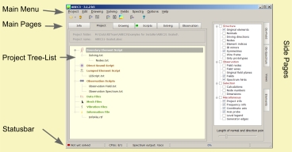

In ABEC all functions are available via its Main Menu.
The Main Pages organize the project, render the model and provide reporting of processing.
The Side Pages lets you control observations and items of the 3D-display.
The Project Tree-List is used to register scripts and files with the project, see chapter Project. Some functions depend on the current select in the Project-Tree-List.
The Statusbar at the bottom of the desktop reports the calculation progress.
At the bottom left is reported if saving of Result Files is enabled.